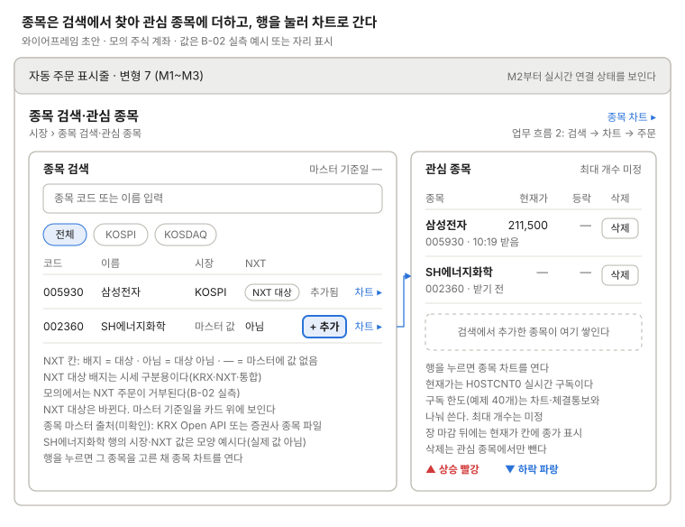

종목 검색·관심 종목
종목 마스터를 검색하고 관심 종목을 관리한다.

왼쪽 검색 결과에서 + 추가를 누르면 오른쪽 관심 종목에 쌓이고, 두 목록의 행을 누르면 그 종목을 고른 채 종목 차트를 연다. NXT 칸은 대상(배지)·아님·값 없음(—)을 나누어 보이고, 종목 마스터 출처는 아직 미확인이다.
쓰는 공통 UI
화면 틀 · 자동 주문 표시줄 (변형 7, M2부터 연결 상태 칸)
상태
| 상태 | 보일 것 |
|---|---|
| 검색어 입력 전 | 결과 자리에 입력 안내. 관심 종목은 그대로 |
| 결과 0건 | "찾는 종목이 없다" 한 줄. 고른 시장 칩은 유지 |
| 종목 마스터 미수신·갱신 실패 | 검색 카드 위 경고 띠. 마스터 기준일은 마지막 성공일 |
| 관심 종목 가득 참 | + 추가 비활성, 최대 개수에 닿았다는 안내(숫자 미정) |
| 현재가 받기 전 | 현재가 칸 "—", 받은 시각 자리에 "받기 전" |
| 실시간 끊김 | 현재가를 흐리게, 마지막 받은 시각 유지. 표시줄 연결 칸 "재연결 중" |
| 장 시작 전·마감 뒤 | 현재가 칸에 "종가"와 기준일 |
| 거래정지·상장폐지된 관심 종목 | 행에 상태 배지(표시명 미정). 삭제는 가능 |
| NXT 값 없음 | NXT 칸 "—". 대상이 아니면 "아님" |
화면 규칙
- 보여 줄 것: 종목 코드, 이름, 시장(KOSPI/KOSDAQ), NXT 대상 여부, 관심 종목(종목, 현재가, 등락, 삭제), 마스터 기준일, 값마다 받은 시각
- 미확인: 종목 마스터 출처(KRX Open API 또는 증권사 종목 파일)
- 주의: NXT 대상은 바뀐다. 모의에서는 NXT 주문이 안 되므로 배지는 시세 구분용으로만 쓴다
- 관심 종목 최대 개수는 WebSocket 구독 한도(예제 클라이언트 40개, 차트·체결통보와 공유)에 묶인다. 숫자와 "보이는 행만 구독" 여부는 미정